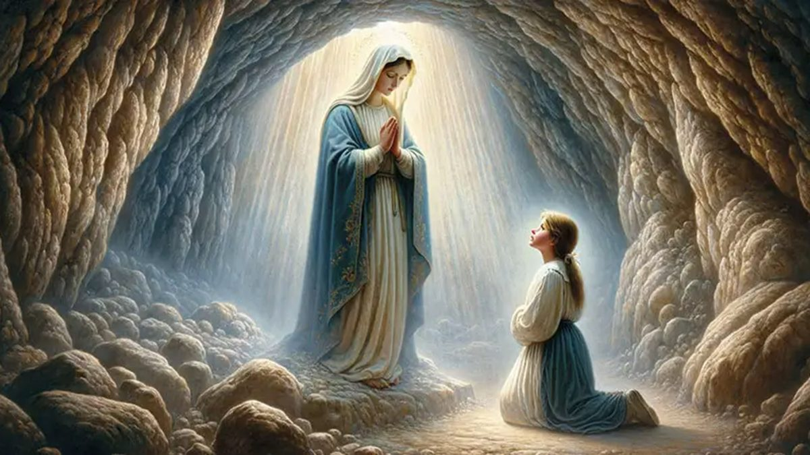
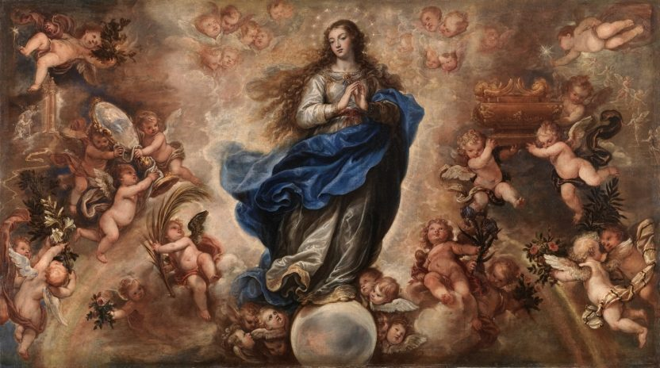

Historia del Dogma de la Inmaculada Concepción
La verdad que hoy celebramos como dogma de fe no nació de un decreto papal improvisado, sino que maduró durante siglos en el corazón de la Iglesia, entre disputas teológicas encendidas, devoción popular irreprimible y una tradición litúrgica que se remontaba a la Iglesia de Oriente. Para comprender el alcance de lo que Pío IX proclamó solemnemente el 8 de diciembre de 1854, es necesario recorrer ese largo camino.
En la Edad Media, la cuestión de si María había sido concebida sin pecado original dividió a las dos más grandes escuelas teológicas de la época. Los dominicos, encabezados por Santo Tomás de Aquino y más tarde por San Bernardo de Claraval, argumentaban que nadie, ni siquiera María, podía ser redimido antes de que la Redención se hubiera consumado en la Cruz. Afirmar que María fue preservada del pecado original, razonaban, equivaldría a negar que ella también necesitaba a Cristo como redentor. La objeción era seria y honesta.
Fue el teólogo franciscano escocés Juan Duns Escoto (c. 1265–1308) quien ofreció la solución filosófica y teológica que resolvería el nudo. Escoto distinguió entre dos modos de redención: la redención liberativa, que libera a alguien de una esclavitud ya contraída, y la redención preservativa, que impide que alguien caiga en esa esclavitud antes de que ocurra. Aplicado a María, argumentó que no solo era posible sino conveniente —usando el famoso principio del potuit, decuit, ergo fecit: "Dios pudo hacerlo, era conveniente, por tanto lo hizo"— que Dios preservara a la Madre de su Hijo del pecado original en previsión de los méritos de Cristo. Esta fue una intuición genial: María sería más redimida que todos nosotros, no menos; redimida de forma más excelente, por anticipación en lugar de reparación.
La devoción popular, mientras tanto, avanzaba con más rapidez que la teología académica. La fiesta de la Concepción de María ya se celebraba en Oriente desde el siglo VII y en Inglaterra desde el siglo XI. En España, Nápoles y diversas órdenes religiosas, la convicción de la Inmaculada se había arraigado profundamente en el alma creyente. La Orden Franciscana adoptó la posición escotista como propia; la Compañía de Jesús, fundada en el siglo XVI, se convirtió en uno de sus más fervientes defensores institucionales. Los siglos XVI y XVII vieron verdaderas "guerras de la Inmaculada" en ciudades como Sevilla, donde las procesiones a favor y en contra de la definición dogmática llegaron a producir incidentes graves.
Tras consultar a los obispos de todo el mundo y constatar el consenso casi universal de la fe del pueblo cristiano, el Papa Pío IX convocó una solemnísima ceremonia en la Basílica de San Pedro el 8 de diciembre de 1854. Con la Bula Ineffabilis Deus proclamó ex cathedra: "La doctrina que sostiene que la beatísima Virgen María fue preservada inmune de toda mancha de la culpa original en el primer instante de su concepción, por singular gracia y privilegio de Dios omnipotente, en atención a los méritos de Cristo Jesús salvador del género humano, ha sido revelada por Dios y, por tanto, debe ser firme y constantemente creída por todos los fieles." Era la primera vez que un papa empleaba de forma tan explícita la autoridad de la infalibilidad pontificia para definir un dogma mariano, sentando también el precedente para la definición del dogma de la infalibilidad papal en el Concilio Vaticano I (1870).
(El término griego kecharitomene — "la que ha sido completamente agraciada" — apunta a una plenitud de gracia singular y permanente desde su origen)
La Confirmación en Lourdes: "Soy la Inmaculada Concepción"

Cuatro años después de la definición dogmática, en una pequeña ciudad de los Pirineos franceses llamada Lourdes, una niña de catorce años llamada Bernadette Soubirous comenzó a recibir apariciones en la gruta de Massabielle a partir del 11 de febrero de 1858. La muchacha, hija de un molinero empobrecido, analfabeta y de salud frágil, no tenía ningún interés personal ni capacidad intelectual para fabricar un mensaje teológico de semejante precisión.
Durante semanas, Bernadette describía a una "bella señora" vestida de blanco con un cinturón azul y una rosa amarilla sobre cada pie, que sostenía un rosario entre sus manos. Las autoridades eclesiásticas y civiles la interrogaron repetidamente, tratando de encontrar contradicciones o señales de perturbación mental. Bernadette mantuvo su relato con coherencia serena. El 25 de febrero, siguiendo las instrucciones de la aparición, cavó en el suelo de la gruta y brotó el manantial que hoy atrae a millones de peregrinos enfermos en busca de curación.
Pero el momento decisivo llegó el 25 de marzo de 1858, festividad de la Anunciación. Bernadette, instruida por su párroco para preguntar el nombre de la señora, repitió la pregunta varias veces. Hasta ese momento, la aparición no había respondido directamente. Finalmente, la señora juntó sus manos, las levantó hacia el cielo, y con una expresión de gozo sereno respondió en dialecto gascón: "Que soy era Immaculada Councepciou" —"Yo soy la Inmaculada Concepción."
El efecto fue electrizante. Bernadette corrió a casa de su director espiritual, el abate Peyramale, repitiendo las palabras en voz alta durante todo el camino para no olvidarlas, ya que no comprendía su significado. El sacerdote quedó estupefacto: la muchacha no podía haber inventado aquella fórmula dogmática proclamada apenas cuatro años antes, cuyas implicaciones teológicas escapaban a la mayoría de los adultos instruidos. La Virgen no había dicho "yo soy inmaculadamente concebida" —que habría sido la formulación de una criatura que describe su estado— sino "yo soy la Inmaculada Concepción", identificándose con el misterio mismo, como si ese don de Dios constituyera la esencia más profunda de su identidad. La investigación eclesiástica que culminó en el reconocimiento oficial de las apariciones en 1862 consideró este episodio como uno de los argumentos más sólidos a favor de la autenticidad de las apariciones.
Significado Teológico: La Redención Más Perfecta
Un malentendido frecuente consiste en pensar que la Inmaculada Concepción significa que María no necesitó ser redimida por Cristo, o que fue redimida de forma distinta al resto de la humanidad en un sentido que la excluye de la obra salvadora de su Hijo. La definición dogmática y la teología que la sustenta afirman precisamente lo contrario: María fue redimida de la manera más perfecta posible, precisamente porque Cristo aplicó de forma anticipada —en previsión de sus méritos— los frutos de su Redención al primer instante de la existencia de su Madre.
La diferencia entre la redención de María y la nuestra es análoga a la diferencia entre salvar a alguien de caer a un abismo —impidiendo que dé el paso fatal— y rescatar a alguien que ya ha caído en él. Ambas acciones son obra del mismo redentor; la primera es, si cabe, más perfecta. Este planteamiento, elaborado por Duns Escoto y asumido por la bula pontificia, sitúa la Inmaculada Concepción dentro del orden de la gracia cristológica y no fuera de él.
La Inmaculada Concepción tampoco debe confundirse con la concepción virginal de Jesús. El dogma de 1854 habla del momento en que María fue concebida —por sus padres san Joaquín y santa Ana, de forma enteramente natural— y afirma que en ese instante fue preservada de la mancha del pecado original. El dogma de la concepción virginal de Cristo, en cambio, afirma que Jesús fue concebido en el seno de María sin intervención de varón, por obra del Espíritu Santo. Son dos realidades teológicamente distintas, aunque profundamente relacionadas: Dios preparó el seno materno que había de alojar al Verbo Encarnado haciendo de él un tabernáculo digno, incontaminado desde su origen.
El papel del Espíritu Santo en este misterio es central. La plenitud de gracia que el ángel saluda en Lucas 1,28 —el término griego kecharitomene, un perfecto pasivo que indica una acción pasada con efectos permanentes en el presente— apunta a que María era ya, antes de la Anunciación, el ser humano más plenamente habitado por la gracia divina. La tradición patrística y medieval vio en esa expresión gramatical una confirmación escriturística de la preexcelencia singular de María en el orden de la gracia.
Devoción, Arte y Celebración

La fiesta del 8 de diciembre, establecida como Solemnidad en el calendario romano, cae en un período litúrgico de particular riqueza simbólica: el tiempo de Adviento, la espera de la venida de Cristo. Resulta profundamente coherente que, en las semanas en que la Iglesia aguarda la llegada del Salvador, se detenga a contemplar a aquella que lo aguardó de la manera más perfecta: purísima, sin la sombra del pecado, llena de esperanza y de gracia.
En el arte occidental, la iconografía de la Inmaculada Concepción se consolidó especialmente a partir del siglo XVII bajo el impulso de pintores españoles como Bartolomé Esteban Murillo, Francisco de Zurbarán y Diego Velázquez. La imagen canónica representa a María joven, vestida de blanco y azul —el azul como color de su pureza singular, distinto del rojo de la caridad asociado a otras imágenes marianas—, con la luna bajo sus pies, coronada de doce estrellas y aplastando la cabeza de la serpiente, en clara referencia al Protoevangelio de Génesis 3,15. Esta iconografía bebe directamente del capítulo 12 del Apocalipsis.
La Medalla de la Inmaculada, conocida popularmente como Medalla Milagrosa, tiene su origen en las apariciones que la Virgen hizo a Santa Catalina Labouré en París en 1830, apenas veinticuatro años antes de la definición dogmática. La inscripción que la Virgen misma dictó —"Oh María, concebida sin pecado, ruega por nosotros que recurrimos a ti"— se convertiría en una de las jaculatorias marianas más rezadas del mundo y en un compendio devocional del dogma.
El 8 de diciembre es patronal en numerosos países y diócesis. En España, es fiesta nacional y día de la Patrona del Ejército de Tierra. En Estados Unidos, la Inmaculada Concepción es la Patrona de la nación desde 1847, y la Basílica del Santuario Nacional de la Inmaculada Concepción en Washington D.C. es la mayor iglesia católica de Norteamérica. Los franciscanos y los jesuitas —con su voto especial de defensa del privilegio mariano— han sido históricamente los grandes propagadores de esta devoción en todo el mundo.